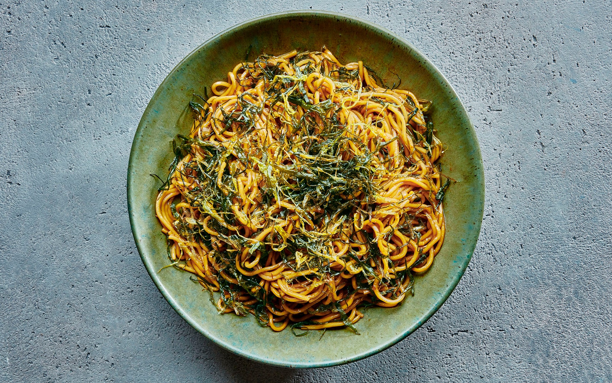

Scallion Oil Noodles

Prep time: 5 minutes
Ingredients
- 3 tablespoons cooking oil
- 2 stalks scallion, roots trimmed and cut into strips
- 8 oz. (226 g) fresh noodles
- 1 tablespoon oyster sauce
- 1 teaspoon soy sauce
Instructions
-
Heat up a wok with the cooking oil until it begins to smoke. Add the
scallion strips and stir continuously with the spatula until the
scallions are aromatic and becomes moderately burned. (This process
will release the full fragrance of the scallions and infuses the
scallion oil with the intense aroma.) Set aside the scallion oil.
-
Heat up a pot of water until it boils. Cook the fresh noodles al
dente. The noodles should be cooked through but still somewhat firm
and springy. Drain the noodles and transfer into a bowl.
-
Add the scallion oil, oyster sauce and soy sauce into the noodles.
Using a pair of chopsticks, toss the noodles to blend well with the
scallion oil and seasoning sauces. Serve immediately.